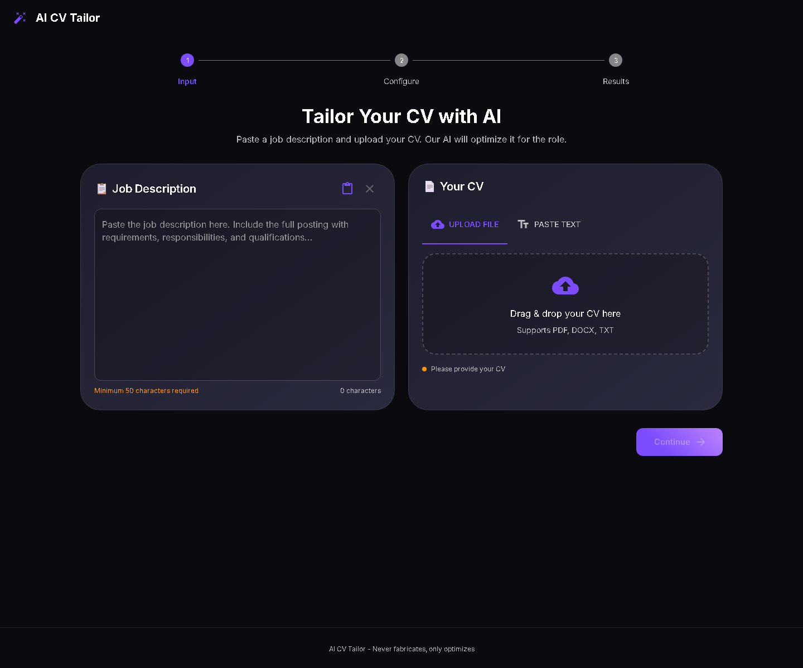
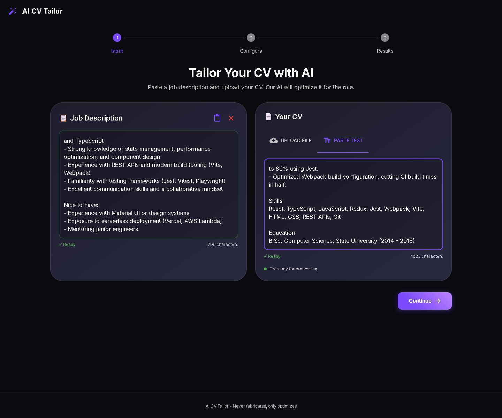
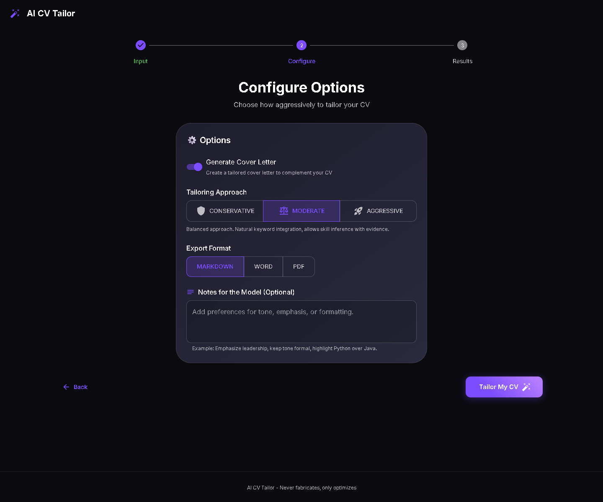
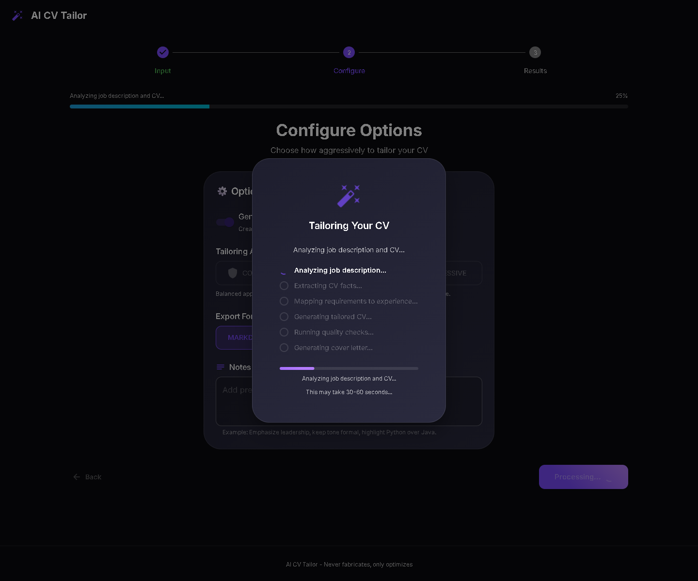
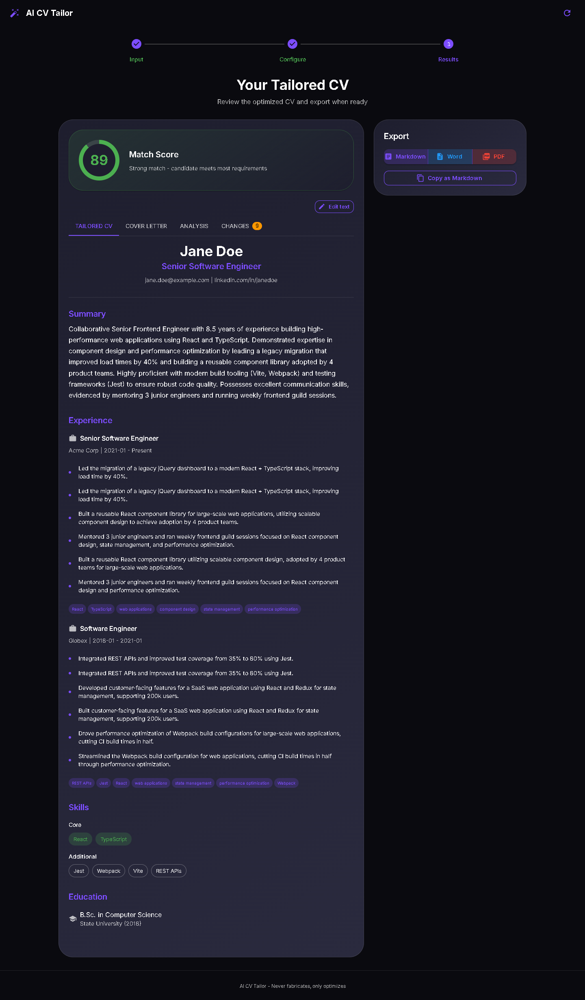
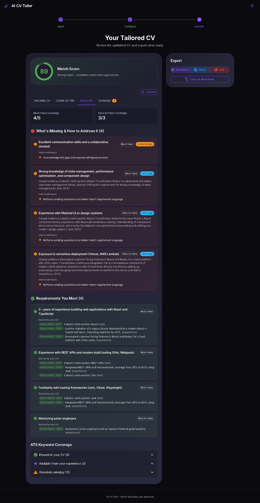
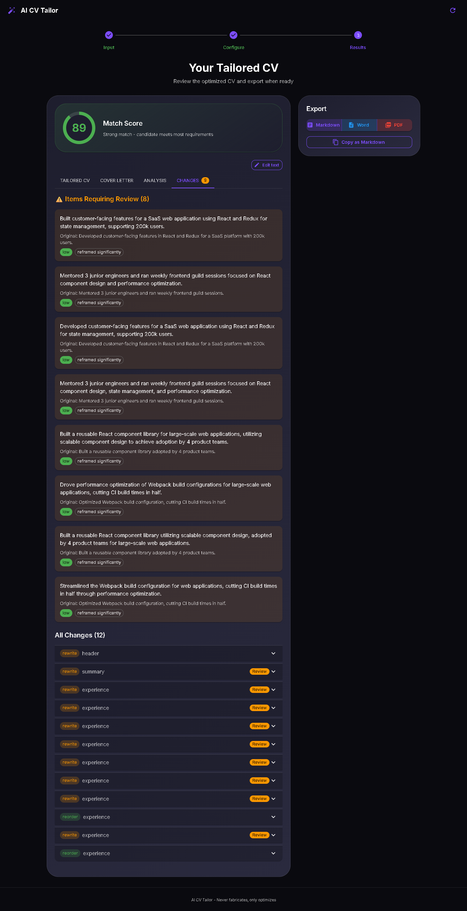
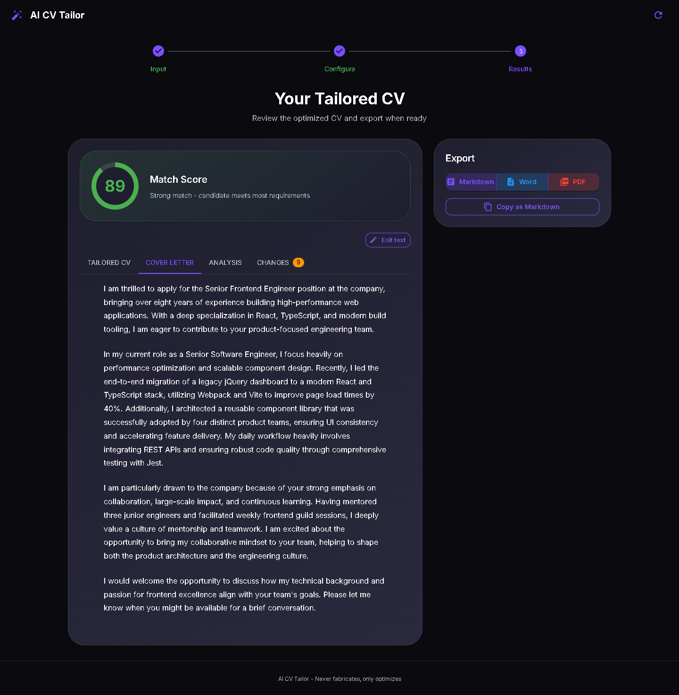

כל הפרויקט בעברית פשוטה — מההחלטות המוצריות, דרך הקוד והארכיטקטורה, ועד הפריסה. כולל תרשימים אינטראקטיביים, צילומי מסך חיים מהאתר, וסקירה כנה של הטוב, הרע והמכוער.
TailorCV הוא מערכת מבוססת בינה מלאכותית שמתאימה (מ"תופרת", Tailor) קורות חיים למשרה ספציפית. מדביקים תיאור משרה + קורות החיים שלך, והמערכת מייצרת גרסה מותאמת שמדגישה בדיוק את מה שהמשרה מחפשת — בלי לשקר.
| בלי TailorCV | עם TailorCV |
|---|---|
| שולחים את אותם קו״ח לכל משרה | כל משרה מקבלת גרסה מותאמת |
| מילות מפתח של המשרה (ATS) חסרות | מילות המפתח משולבות באופן טבעי |
| הניסוח לא מדבר בשפת המשרה | ההישגים מנוסחים מחדש בשפה רלוונטית |
| קל "להמציא" כדי להיראות טוב | המערכת חוסמת המצאות אוטומטית |
המשתמש בוחר כמה "אגרסיבית" תהיה ההתאמה — החלטת מוצר מרכזית:
| רמה | כישורים מוסקים | ניסוח מחדש | מילות מפתח | מתאים ל... |
|---|---|---|---|---|
| Conservative | ❌ לא | מינימלי | רק עם הוכחה | תחומים מפוקחים |
| Moderate | ✅ כן | מאוזן | שילוב טבעי | רוב המקרים (ברירת מחדל) |
| Aggressive | ✅ כן | נרחב | מקסימום | שליחה בכמויות |
ההגדרות מוגדרות כ-STRICTNESS_CONFIGS ושולטות בארבעה "כפתורים" פנימיים: כישורים מוסקים, ניסוח מחדש, עוצמת הזרקת מילות מפתח, ועד כמה לגשר על פערים.
שלושה שחקנים: הדפדפן (React), שרת ה-API (FastAPI), ומנוע ה-AI (Google Gemini).
flowchart TD
User([👤 המשתמש])
subgraph Browser["🖥️ דפדפן — React + MUI"]
UI[אשף 3 שלבים]
Orch[מתזמר הצנרת]
end
subgraph Vercel["☁️ Vercel"]
Static[קבצים סטטיים]
API[FastAPI כ-Serverless]
end
Gemini[[🤖 Google Gemini]]
User --> UI --> Orch
Orch -->|HTTP לכל שלב| API
Static -.מגיש UI.-> UI
API -->|קריאות LLM| Gemini
Gemini -->|JSON / טקסט| API
API -->|תוצאות| Orch
TailorCV/ ├── api/index.py ← נקודת כניסה ל-Serverless (מתאם דק) ├── backend/app/ │ ├── main.py ← FastAPI, CORS, שגיאות │ ├── config.py ← הגדרות │ ├── models/ ← מבני נתונים (Pydantic) │ ├── services/ ← 6 המודולים + הצנרת │ ├── utils/ ← LLM, מסמכים, ייצוא, rate-limit │ └── routers/tailor.py ← ה-API endpoints ├── frontend/src/ │ ├── App.tsx ← מרכז ה-state + האשף │ ├── components/ ← 5 קומפוננטות מסך │ ├── services/api.ts ← הלקוח שמתזמר את הצנרת │ └── types/index.ts ← הטיפוסים המשותפים ├── vercel.json ← הגדרת הפריסה └── .github/workflows/ci.yml ← בדיקות אוטומטיות
מה שקורה מרגע שהמשתמש נכנס ועד שהוא מוריד קובץ:
flowchart TD
Start([פותח את האתר]) --> S0[שלב 0 — קלט:
תיאור משרה + קו״ח]
S0 --> Valid{קלט תקין?}
Valid -->|לא| S0
Valid -->|כן| S1[שלב 1 — הגדרות:
מחמירות, מכתב, הערות]
S1 -->|Continue| Pipe[🔄 הרצת הצנרת
פס התקדמות חי]
Pipe --> S2[שלב 2 — תוצאות:
קו״ח + מכתב + ניתוח + שינויים]
S2 --> Export{ייצוא?}
Export -->|Markdown / Word| Server[שרת מייצר קובץ]
Export -->|PDF| Client[הדפדפן מייצר PDF]
Export -->|Copy| Clip[העתקה ללוח]
Server --> Done([הורדה])
Client --> Done
Clip --> Done
שלב 0 — קלט: מדביקים תיאור משרה ומעלים/מדביקים קו״ח. כפתור ה-Continue נעול עד שהקלט תקין.


שלב 1 — הגדרות: מכתב מקדים, רמת מחמירות, ופורמט ייצוא. שימו לב לבורר Export Format — זהו ה"קוד המת" (ראו פרק 11): הבחירה כאן לא נשלחת בכלל ל-API.

במהלך העיבוד: דיאלוג התקדמות אמיתי שמראה את 6 שלבי הצנרת אחד-אחד — אפשרי בזכות התזמור בצד הלקוח (פרק 8).

שלב 2 — תוצאות: קו״ח מותאמים עם ציון התאמה (כאן 89), 4 טאבים, ופאנל ייצוא.

טאב הניתוח: "מה חסר ואיך לגשר" + "דרישות שאתה עונה עליהן" + כיסוי מילות מפתח ATS — עבודת ה-Mapper באופן חזותי.



לב המערכת: צנרת (Pipeline) של 6 מודולים. כל מודול הוא שירות שמקבל קלט מובנה ומחזיר פלט מובנה.
flowchart TD
IN1[תיאור משרה] --> M1
IN2[קו״ח מקוריים] --> M2
M1["1️⃣ Job Extractor
דרישות, מילות מפתח ATS"]
M2["2️⃣ CV Extractor
עובדות מאומתות בלבד"]
M1 --> M3
M2 --> M3
M3["3️⃣ Mapper
דרישה ← ראיה + ציון"]
M3 --> M4["4️⃣ CV Generator
כותב ומנסח מחדש"]
M4 --> M5{"5️⃣ QA Guardrails
יש המצאה?"}
M5 -->|לא| M6["6️⃣ Cover Letter
מכתב אופציונלי"]
M5 -->|כן| BLOCK[🛑 שגיאה 400
FABRICATION_DETECTED]
M6 --> OUT[📦 TailorResult]
| # | מודול | מה הוא עושה | AI? |
|---|---|---|---|
| 1 | Job Extractor | הופך תיאור משרה חופשי לרשימה מובנית: דרישות חובה/רצויות, אחריות, מילות מפתח ATS, רמזי תרבות. | ✅ |
| 2 | CV Extractor | מחלץ רק עובדות מאומתות, שומר ניסוח מקורי, ומוחק כישורים מוסקים בלי הוכחה. | ✅ |
| 3 | Mapper | מקשר כל דרישה לראיה בקו״ח, נותן ציון רלוונטיות, מסווג סוג התאמה. מחשב ציון כולל. | ✅ |
| 4 | CV Generator | בונה קו״ח חלק-אחר-חלק, משכתב כל שורה, צובר יומן שינויים ופריטים גבוליים. | ✅ |
| 5 | QA Guardrails | ללא AI — בדיקות Python שמאתרות המצאות וחוסמות. | ❌ |
| 6 | Cover Letter | מכתב מקדים ב-4 פסקאות, בטון שמתאים לתרבות החברה. | ✅ |
כל הקשר עם Gemini עובר דרך מחלקה אחת (llm_client.py) עם שתי דרכי קריאה:
gemini-3.1-pro-preview — יחיד לכל השלבים. טמפרטורה 0.1 לפלט יציב.כדי לעמוד בזמן (פרק 8), קריאות AI רצות במקביל ב-asyncio.gather: מודולים 1+2 יחד, כל דרישה ב-Mapper במקביל, וכל שורת ניסיון משוכתבת במקביל. זה מקצר את הזמן מ"סכום כל הקריאות" ל"הקריאה הכי איטית".
flowchart TD
Start[קו״ח מותאמים מוכנים] --> C1{חברה שלא
הייתה במקור?}
C1 -->|כן| HARD[🛑 חוסם — 400]
C1 -->|לא| C2{כישור שלא
היה במקור?}
C2 -->|כן| HARD
C2 -->|לא| C3{מספר מוגזם?}
C3 -->|כן| WARN[⚠️ אזהרה בלבד]
C3 -->|לא| C4{תפקיד שדורג בכוח?}
C4 -->|כן| WARN
C4 -->|לא| OK[✅ עובר]
WARN --> OK
OK --> Score[ציון התאמה 0–100]
הערכה כנה: המנגנון נשען על השוואת מחרוזות פשוטה, והוא בעיקר רשת ביטחון — לא מאמת סמנטי אמיתי.
הממשק הוא אשף (Wizard) של 3 שלבים עם רכיב Stepper של Material UI. כל ה-state יושב בקומפוננטה אחת (App.tsx) עם useState — אין Redux, אין Context, אין Router.
flowchart LR
App["App.tsx
(כל ה-state)"]
App --> C1[JobDescriptionInput]
App --> C2[CVUploader]
App --> C3[OptionsPanel]
App --> C4[ResultsDisplay]
App --> C5[ExportOptions]
| קומפוננטה | תפקיד | פרטים בולטים |
|---|---|---|
JobDescriptionInput | קלט המשרה | הדבקה מהלוח, ספירת תווים, מינ' 50 |
CVUploader | העלאה/הדבקה | גרירה ושחרור, PDF/DOCX/TXT/MD, מינ' 100 |
OptionsPanel | הגדרות | מכתב, מחמירות, הערות חופשיות |
ResultsDisplay | תצוגה + עריכה | 1031 שורות! 4 טאבים, עריכה inline, Revert |
ExportOptions | ייצוא | MD/Word דרך השרת, PDF בצד הלקוח |
בגרסה המקורית, נקודת קצה אחת הריצה את כל הצנרת — 5-6 קריאות רצופות ל-Gemini — בתוך בקשה אחת. אבל פונקציית Serverless ב-Vercel מוגבלת ל-60 שניות, והמודל איטי → timeout בפרודקשן.
חלק א': הדפדפן מתזמר את הצנרת — קריאה נפרדת לכל שלב, כל אחת עם תקציב 60 שניות משלה:
sequenceDiagram
participant U as 🖥️ דפדפן
participant API as ☁️ FastAPI
participant G as 🤖 Gemini
U->>API: POST /parse-file (אם הועלה קובץ)
API-->>U: טקסט קו״ח
par קריאות מקבילות
U->>API: POST /extract-job
API->>G: חילוץ דרישות
G-->>API: JSON
API-->>U: JobRequirements
and
U->>API: POST /extract-cv
API->>G: חילוץ עובדות
G-->>API: JSON
API-->>U: CVFacts
end
U->>API: POST /map
API-->>U: MappingResult
U->>API: POST /generate-cv
API-->>U: TailoredCV + יומן + ציון
opt מכתב מקדים
U->>API: POST /cover-letter
API-->>U: CoverLetter
end
Note over U: הדפדפן מרכיב את התוצאה
חלק ב': מקביליות בתוך כל שלב (asyncio.gather).
/generate-cv עם נתונים שרירותיים או לדלג על שלבים. האמון עבר לדפדפן.הפרודקשן הוא היברידי: אתר סטטי + פונקציית Python אחת.
flowchart TD
Push[git push ל-master] --> Build[build frontend → dist] & Func[api/index.py
Serverless 60s]
Req([בקשה]) --> Router{rewrites}
Router -->|/api/*| Func
Router -->|/health /docs| Func
Router -->|כל השאר| Build
api/index.py — מתאם דק (11 שורות): מוסיף את backend ל-sys.path ומייבא את FastAPI. אין צורך ב-Mangum.master נפרס; כל PR מקבל preview.
flowchart LR
T[push / PR] --> FE[Frontend:
ci → lint → test → build] & BE[Backend:
install → compile → smoke → pytest]
docker-compose.yml מריץ backend (8000) + frontend (5173) עם --reload. זה לא מייצג את הפרודקשן (שם רצות פונקציות Serverless). נוחות פיתוח בלבד.
| משתנה | היכן | הערה |
|---|---|---|
GEMINI_API_KEY | שרת בלבד | אף פעם לא מגיע ללקוח |
CORS_ORIGINS | שרת | localhost + *.vercel.app |
VITE_API_URL | לקוח | בפרודקשן =/api |
/set-api-key חסום (403) אלא אם DEBUG=true — החלטת אבטחה נכונה.
כל קריאות ה-LLM מ-mock (לא צריך מפתח).
test_api.py — חוזה ה-API, שגיאות, rate-limittest_pipeline.py — חיווט הצנרת + callbackstest_qa_guardrails.py — ⭐ לוגיקת ה-Guardrails האמיתית6 קבצים, בעיקר "נטען בלי לקרוס".
/map, /generate-cv), ל-api.ts (כל לוגיקת התזמור), ל-apply.ts, ואין בדיקות end-to-end.asyncio.gather כדי לעמוד בגבול 60 השניות./set-api-key חסום בפרודקשן.api/ מול backend/) מסונכרנים ידנית.outputFormat לא נשלח ל-API; 3 פונקציות API ישנות.memory:// ב-Serverless הוא זיכרון נפרד וזמני לכל מופע.str(e) — דליפת מידע פנימי.ResultsDisplay.tsx — מפלצת 1031 שורות.ResultsDisplay, הסרת קוד מת.TailorCV הוא פרויקט פורטפוליו מרשים ומהונדס היטב. הוא מדגים חשיבה מוצרית אמיתית (פילוסופיית "ללא המצאות"), הנדסה מתוחכמת (תזמור בצד הלקוח + מקביליות כדי לנצח את גבול ה-Serverless), וקוד נקי ומטופס עם בדיקות.
ובו-זמנית, הוא נושא חתימות של פרויקט שנבנה מהר להדגמה: אין אימות, אין תצפיתיות, ה-Guardrails נאיביים, ויש חוב טכני.
| עדיפות | פעולה | מאמץ |
|---|---|---|
| 🔴 גבוהה | אימות בסיסי (API key / Clerk) + rate-limit על Upstash | בינוני |
| 🔴 גבוהה | לחבר Sentry ולוגים מובנים | נמוך |
| 🟡 בינונית | לחזק את ה-Guardrails (נרמול מחרוזות, כיסוי טקסט חופשי) | בינוני |
| 🟡 בינונית | לאחד requirements.txt, להוסיף lockfile | נמוך |
| 🟢 נמוכה | לפצל את ResultsDisplay.tsx, להסיר קוד מת | נמוך |
| 🟢 נמוכה | בדיקות ל-api.ts, apply.ts, ול-endpoints החדשים | בינוני |